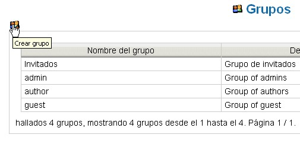

Gestionar Grupos |
Un grupo consiste en una serie de usuarios que tienen
los mismos permisos; es identificado mediante un nombre
unívoco y puede tener una descripción.
Un usuario del tipo Administrador puede acceder a la página
de mantenimiento mediante la ruta: Administración -->
Grupos.
En la pantalla principal verá mostrada la lista de grupos
presentes en el sistema.
Las operaciones posibles son las usuales de una gestión:
crear, modificar y borrar.
Añadir un Grupo
Al igual que lo indicado para los usuarios, haciendo
click sobre el icono Crear grupo se
accede a la máscara en cuestión.

Es suficiente con especificar un nombre y una descripción y
confirmar pulsado Crear.
Por ejemplo, es posible crear un grupo por cada departamento o un grupo
de trabajo y especificar en la descripción esta
relación.
Es posible aquí especificar uno o más grupos de
pertenencia. En este caso, el nuevo grupo copia los permisos de
lectura/escritura de éstos.
Modificar un Grupo
- acceder a la página de gestión (Administración --> Grupo)
- seleccionar el icono Modificar grupo para
modificar la descripción del grupo o la papelera
para borrarlo.
| En el sistema, el grupo es un elemento estructural que sirve para asignar privilegios de accesso. Usa los grupo con el solo fin de aliviar la definición de los privilegios y no para realizar simplemente un agrupamiento de usuarios. De ser así, ten presente los tres grupos: admin (administrador), author (autor) y guest (invitado). Introduce nuevos grupo sólo si es realmente necesario. | |